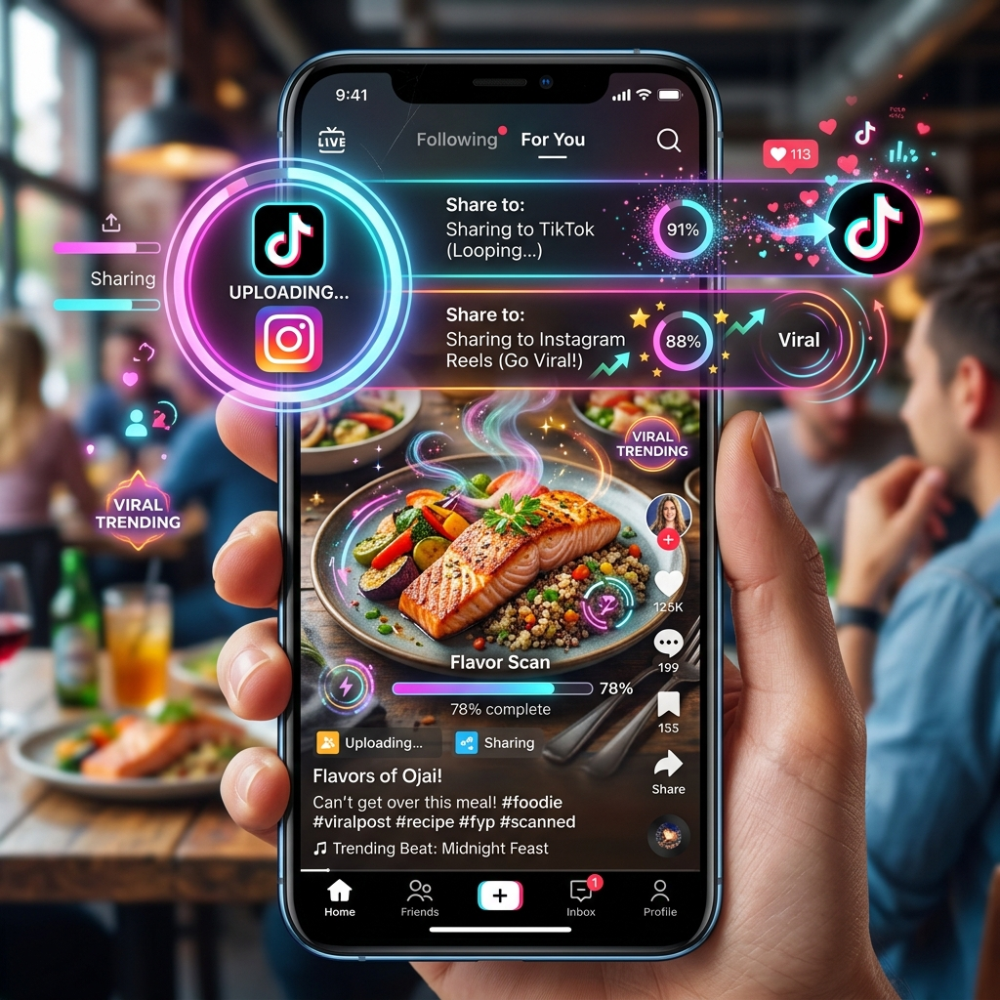

Ваш прогрес, візуалізований для всього світу.

Weight loss is easier when you have a community behind you. KkaloAI doesn't just track data; it creates High-Impact Visuals розроблені для поширення на сучасних соціальних платформах.
Don't just talk about your success—show it with 2026-ready aesthetics:
We believe in the power of transparency and community. By sharing your journey, you're not just celebrating your own success—you're inspiring others to take control of their health. Let's make healthy living viral.